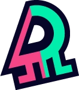
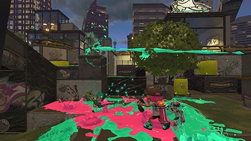
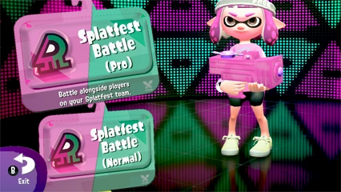
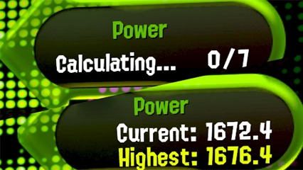
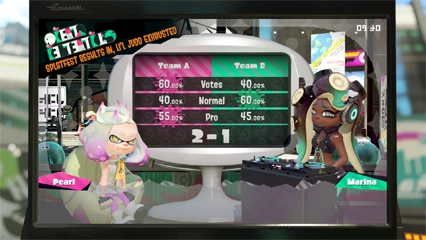

Festimatchs

Les festimatchs sont les guerres de territoire menées au cours des festivals, des évènements ponctuels organisés autour d'un thème qui voient deux équipes s'affronter pour défendre leur opinion.
Des points festival permettant aux joueurs d'obtenir de nouveaux titres sont accordés selon les résultats.
À la fin de chaque festival, les participants reçoivent des super coquillages en fonction du meilleur titre qu'ils ont obtenu.
Il existe deux types de festimatchs : le mode normal et le mode défi!
Des points festival permettant aux joueurs d'obtenir de nouveaux titres sont accordés selon les résultats.
À la fin de chaque festival, les participants reçoivent des super coquillages en fonction du meilleur titre qu'ils ont obtenu.
Il existe deux types de festimatchs : le mode normal et le mode défi!
Mode normal

Les festimatchs du mode normal sont accessibles aux joueurs seuls, mais tu peux aussi rejoindre jusqu'à trois amis de ton équipe!
Dans ce mode, ta contribution est déterminée par la surface que tu as encrée, à laquelle s'ajoutent d'éventuels bonus de victoire.
Si ton équipe obtient victoire après victoire, le logiciel s'emploiera à vous proposer des adversaires qui enchaînent les succès de façon comparable.
Dans ce mode, ta contribution est déterminée par la surface que tu as encrée, à laquelle s'ajoutent d'éventuels bonus de victoire.
Si ton équipe obtient victoire après victoire, le logiciel s'emploiera à vous proposer des adversaires qui enchaînent les succès de façon comparable.
Mode défi

Les festimatchs du mode défi sont conçus pour les joueurs avides de gloire personnelle qui cherchent à repousser leurs limites.
Dans ce mode, c'est ta cote du festival qui compte. Si tu la fais grimper suffisamment, tu figureras peut-être au Top 100 du festival!
Ta contribution augmente chaque fois que tu triomphes de l'équipe adverse. Plus sa cote est élevée, plus tu remportes de points!
Dans ce mode, c'est ta cote du festival qui compte. Si tu la fais grimper suffisamment, tu figureras peut-être au Top 100 du festival!
Ta contribution augmente chaque fois que tu triomphes de l'équipe adverse. Plus sa cote est élevée, plus tu remportes de points!
Résultats finaux

Les résultats finaux d'un festival sont calculés en fonction de trois facteurs : la popularité des équipes, la contribution des joueurs en mode normal et la contribution des joueurs en mode défi.
Même si ton équipe doit s'incliner sur la popularité, les victoires de ses joueurs peuvent encore lui garantir la suprématie!
Les participants dont l'équipe a gagné reçoivent davantage de super coquillages que ceux de l'équipe adverse.
Même si ton équipe doit s'incliner sur la popularité, les victoires de ses joueurs peuvent encore lui garantir la suprématie!
Les participants dont l'équipe a gagné reçoivent davantage de super coquillages que ceux de l'équipe adverse.